Original Image
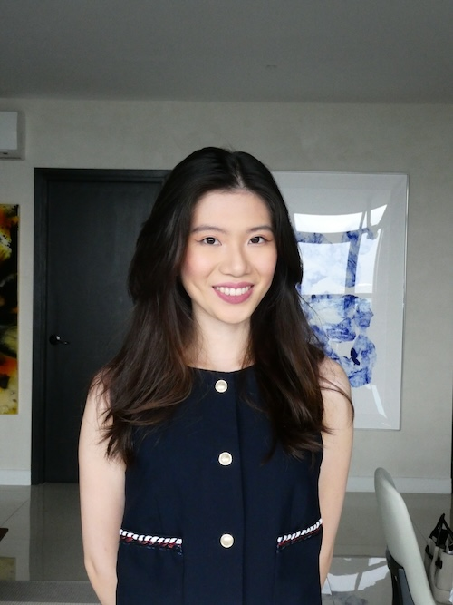
Filter: N/A
Using Four Loop Function
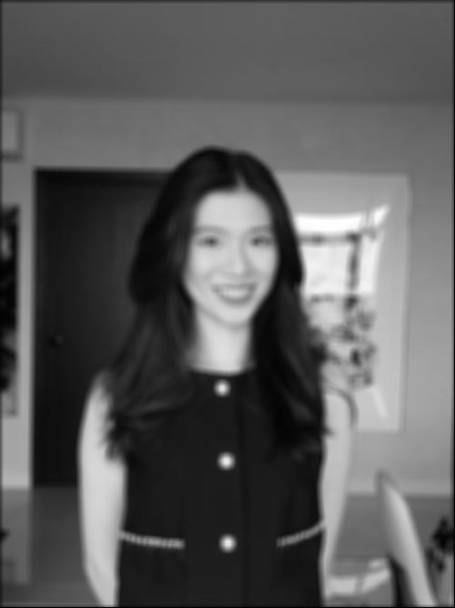
Filter: 9x9 box filter
Using Two Loop Function

Filter: 9x9 box filter
Using scipy.signal.convolve2d()
Filter: 9x9 box filter
For part 1.1, I had to create functions that would execute a convolution of an image using any filter. A convolution is where a filter or a kernel is used to go through each pixel on the image and find the sum of the dot product between the kernel and a matrix of the same size on the image centered on the given pixel. Therefore, to code a convolution, I would need to iterate through all the pixels on the image and apply the filter to it.
All images were converted to greyscale before applying the convolution.
For my four and two loop functions, I created padding using np.pad(). The padding for each dimension was the size of half of the kernel. This is because the convolution centers the kernel on the pixel and calculates the dot product of this. Therefore, I needed to add padding for half the kernel for the edges. Below is a drawing I made to show an example of what I'm referring to.
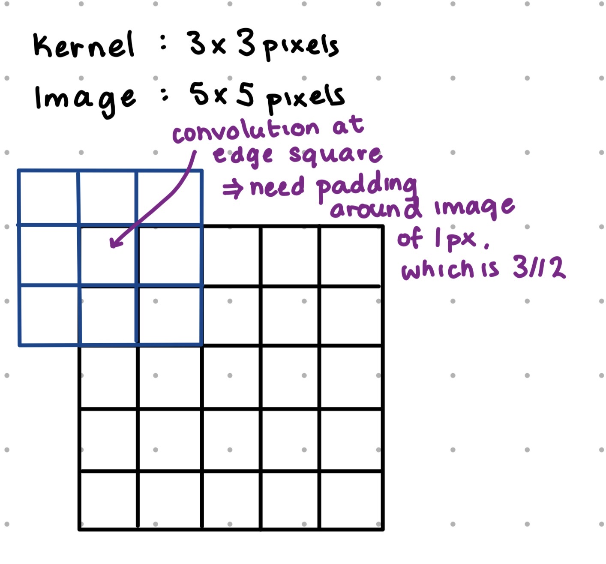
In my four loop function, it first will flip the filter in the x-direction and y-direction. This is because when doing a convolution, you need to flip the filter in both the x- and y-direction. It's important to flip the filter since I will be using this function for the finite difference filters which are not symmetrical.
Afterwards, I loop through each (x, y) coordinate of the image. At each (x, y) coordinate, I iterate through each (i, j) coordinate of the kernel and multiply the kernel value with the value in the corresponding coordinate in the image (i.e. kernel[i, j] * matrix[x+i, y+j]. These values are all added together and averaged to become the new value for the (x, y) coordinate. The reason I can do x+i and y+j is because of my padding. I am iterating through the padded image from 0 which corresponds to the padding.
Below is my code:
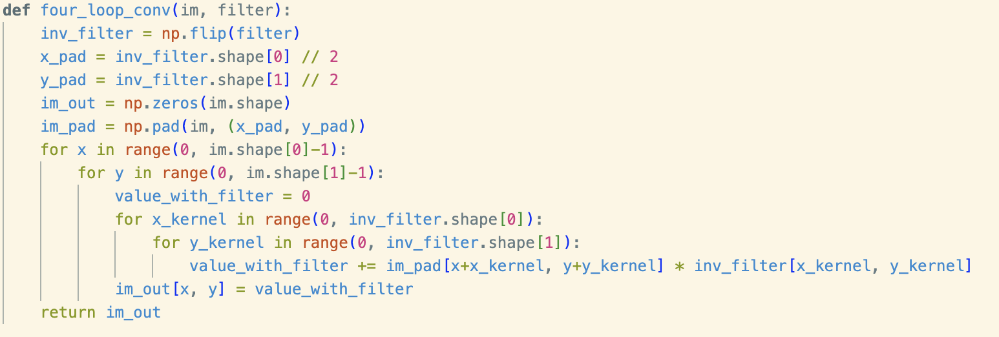
First, my function flips the filter in the x-direction and y-direction like in my four loop function for the same reason as mentioned above.
Afterwards, I loop through each (x, y) coordinate of the image. At each (x, y) coordinate, the function will calculate the sum of the dot product between the kernel and the corresponding coordinates on the image and average it.
Similar to my four loop function, my loop starts from index zero which is the padding, the corresponding "box" in the image is [x:x+pad, y:y+pad]. However, in my original non-padded image, the (x, y) coordinate in the for loops corresponds to the correct (x, y) coordinate in the image. Therefore, I will set the new value to the (x, y) coordinate on the original image.
Below is my code:
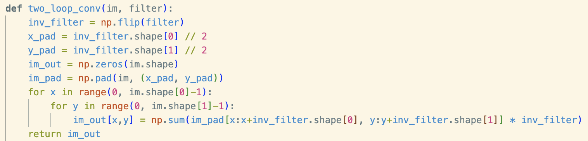
I used a 9x9 box filter, which is supposed to average all the values around each pixel in order to create a blur effect. I also used the built-in scipy function scipy.signal.convolve2d() to blur the image as a comparison for my two functions. Below is the original image of myself with the after results using my two functions and the built-in scipy function:

Filter: N/A

Filter: 9x9 box filter
Filter: 9x9 box filter
Filter: 9x9 box filter
For scipy.signal.convolve2d() the parameters I used were: boundary='fill', mode='same', fillvalue=0. This was because my four loop and two loop functions used zero-padding, therefore for consistency and comparison I made sure the built-in function also used zero-padding.
I also used the 3 functions to convolve my image using the finite difference operators: Dx = [1, 0, -1], Dy = [1, 0, -1]T. Below are the results:
Filter: N/A

Filter: Dx finite difference filter
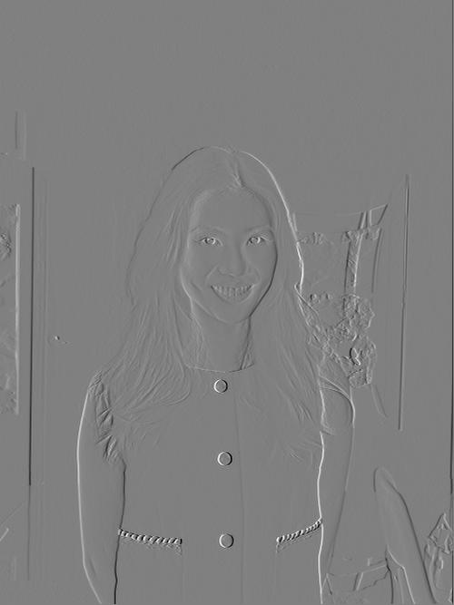
Filter: Dx finite difference filter
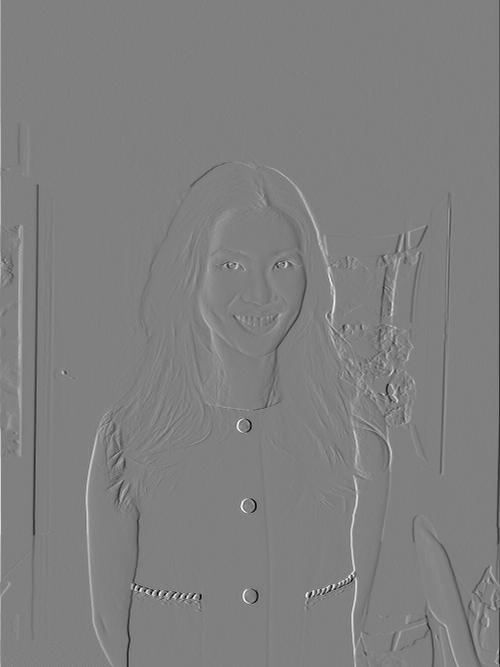
Filter: Dx finite difference filter
Filter: Dy finite difference filter

Filter: Dy finite difference filter
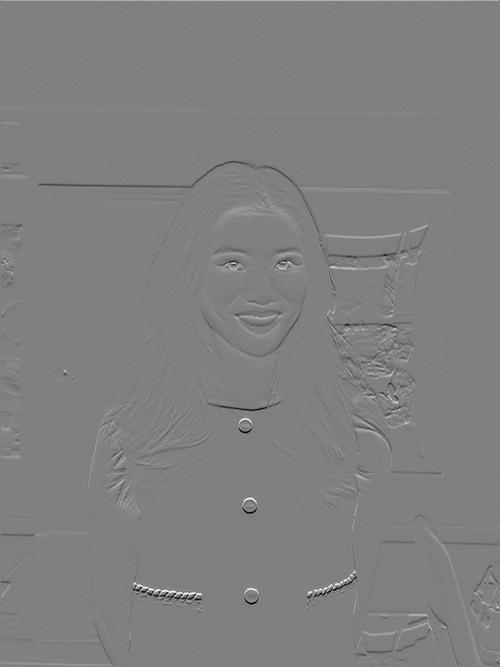
Filter: Dy finite difference filter
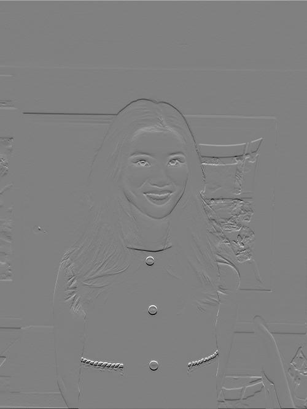
Filter: Dy finite difference filter
*note: to save the convolved images from the finite difference filters I had to normalize the values for visualization, as the finite difference filter calculates the gradient, which can be negative. The normalization equation I used was: (image - max_value) / (max_value - min_value)
Just by comparing the image results, all 3 functions generated the same images when applying the 9x9 box filter and finite difference filters. There is no difference in appearance. Also, when I subtracted some of the image matrices from each other, they returned a zero matrix. This indicates to me that all 3 functions have the same functionality.
The time complexity of all the functions should be the same O(x * y * i * j), since the convolution must iterate through all the coordinates in the image (x * y), and for each pixel in the image it has to iterate through the size of the kernel to compute the sum of the dot product between the surrounding pixels and the kernel (i * j). However, I noticed that when I ran the code, the four loop function was the slowest, and the built-in scipy function was the fastest. This could be due to parallelization during the scipy function to speed up the runtime.
The finite difference operators act as line filters, identifying either horizontal or vertical lines in the image by computing the partial derivative. I computed the partial derivatives by convolving each finite difference vector with the cameraman image separately. Below are the results of applying the finite difference vectors:

Filter: N/A
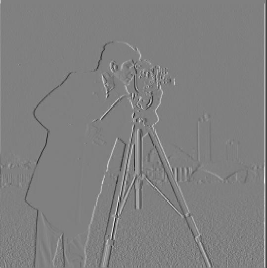
Filter: dx finite difference filter, which finds vertical lines
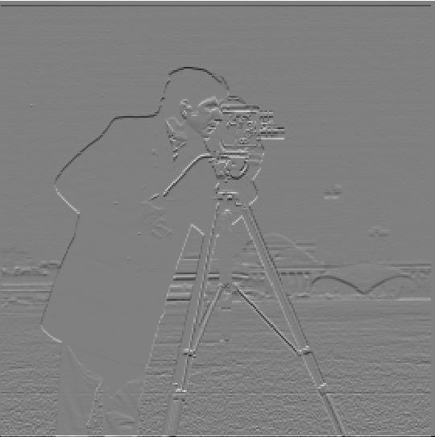
Filter: dy finite difference filter, finds horizontal lines
In order to visualize and save the results of the finite difference filters convolved with the cameraman image, I had to normalize the values like in part 1.1 using the same equation ((image - max_value) / (max_value - min_value)).
Afterwards, I combined the non-normalized partial derivatives to create a gradient magnitude image using the following gradient magnitude equation:
||f|| = √((df/dx)2 + (df/dy)2)
Where df/dx is the matrix from the convolution between my image and dx, and df/dy is the matrix from the convolution between my image and dy
Below is the result:

I then binarized the image to turn the gradient magnitude image into a line image. By binarizing, values below a defined threshold will become 0 and values above the threshold will be set to 1. In this case, I used the threshold = 0.38. I chose this threshold after trying a few values between 0.3-0.5. The line image should have minimal noise, and so when I used a threshold value of greater than 0.4 there was more noise around the bottom of the image due to the city background. Therefore, I stuck to 0.38 because it still creates a line image of the cameraman and his camera while minimizing the unnecessary noise at the bottom of the image from the city.
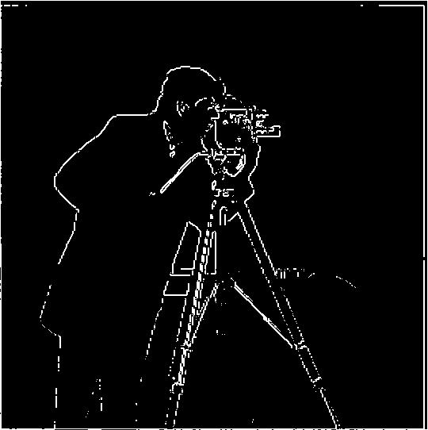
To reduce noise, I applied the gaussian filter with a sigma of 4 to the cameraman image to blur it. This reduces some of the high frequencies, which could help reduce the noise from the city in the background.
Then, I did the same operations as in Part 1.2 to calculate the partial derivatives of the blurred image, gradient magnitude image and binarized image.
Below are the results!
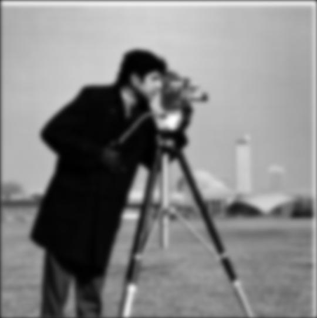
sigma = 4
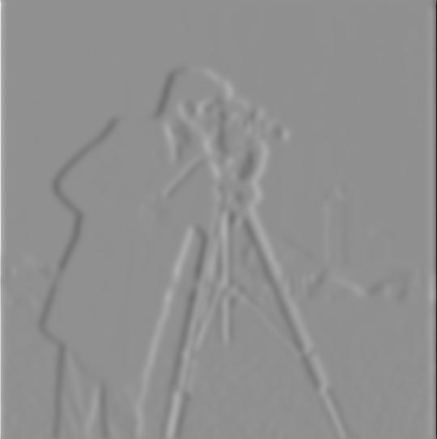
Filter: dx finite difference filter
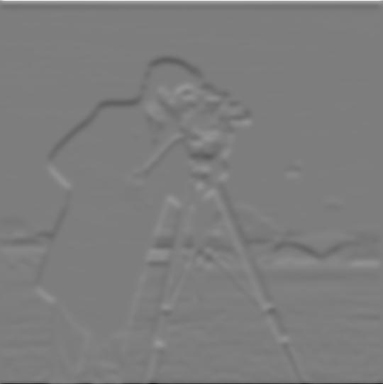
Filter: dy finite difference filter
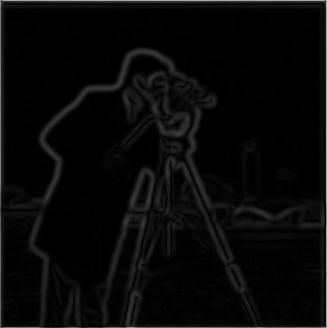
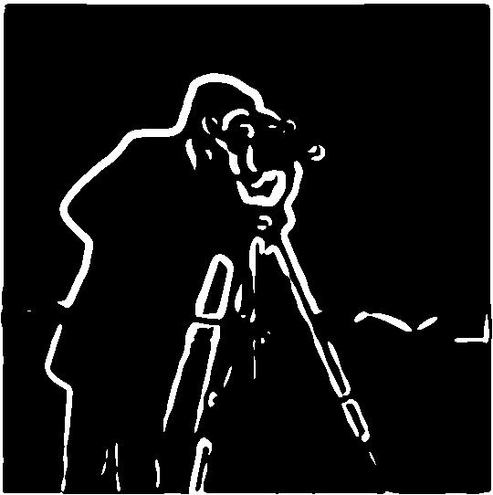
Threshold = 0.07
However, my threshold was a lot lower than in Part 1.2, as it was 0.07. This is probably because of the blurring effect which removes high frequencies, making the gradients a lot smaller so a lower threshold is needed. I also compared the binarized image with my binarized image from Part 1.2. Due to the blurring removing some high frequencies, it made the line in my new binarized image a lot thicker than the one in part 1.2. Another big difference I noticed is that even though my line image captured more details of the cameraman's legs, there is not a lot of background noise visible. However, some of the fine details of the camera was not captured.
I applied my finite difference filters to convolve a gaussian filter of sigma 2 to create partial derivatives of the gaussian filter in both the x and y direction. Afterwards, my program did convolutions of the cameraman image with both partial derivatives of the gaussian filter. Afterwards, I generated the gradient magnitude image and binarized image like in Part 1.2. Below are the results and the DoG filters.
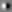
Filter: dx finite difference filter
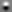
Filter: dy finite difference filter
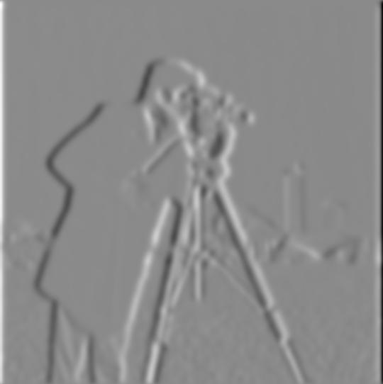
Filter: DoG using dx finite difference filter
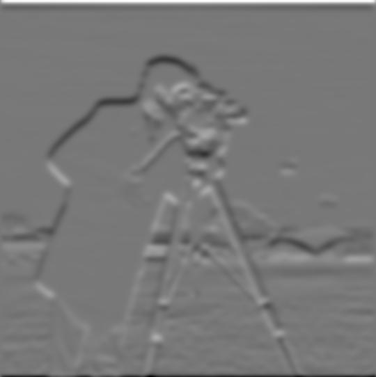
Filter: DoG using dy finite difference filter
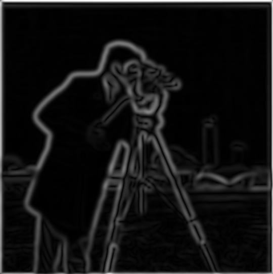
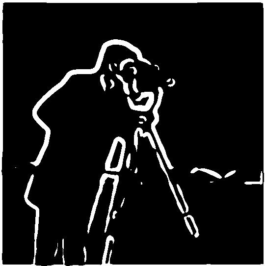
Threshold = 0.06
I had to lower the threshold to 0.06 to get a very similar binarized image to the first part of Part 1.3. This result also had a thicker line than Part 1.2, but was able to capture more line details of the cameraman without adding too much background noise.
When I called the scipy.signal.convolve2d() function, I used boundary='symm' instead of 'fill' for the following parts because when I added padding of 0, it created a light border around the image during part 2.1 when I added the higher frequencies back into the original image. According to the scipy documentation, 'symm' is supposed to help avoid these white edges around the image. [https://docs.scipy.org/doc/scipy/reference/generated/scipy.signal.convolve2d.html]
The task for this part was to create code that could sharpen an image using a Gaussian filter. To sharpen the images, I needed to magnify the existing high frequencies in the image. I did this by doing a convolution of the image with the gaussian filter which blurs the image and removes high frequencies. Then, I subtracted the blurred image from the original image to obtain a matrix of the high frequencies of the image. I added the matrix of high frequencies to the original image to sharpen the image. In addition, I multiplied the matrix of high frequencies by 1.1 (alpha) to increase the magnitude of the high frequencies, further sharpening the image. The result of this operation on the image 'taj.jpg' was:


sigma = 2
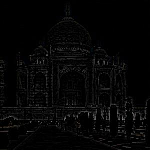
Calculated by taking original (image - blurred image) * alpha, where alpha = 1.1
Calculated by taking original image + high frequency image
I also combined the steps together using the following unsharp mask filter formula that was introduced during lecture 6: (1 + alpha) * unit_impulse - alpha * gaussian filter.
The unit impulse is a kernel with 1 in the center and 0 around it to represent the original image's pixel. This is because to sharpen the image you need image - (image - blurred image) * alpha. The alpha is how much I multiply the matrix of high frequencies to adjust the sharpness of the image. The unit impulse is why I needed to make the kernel size 6 * sigma + 1, as this will ensure that the kernel is always odd so that there is a center of the kernel.
The result of the single unsharp mask filter convolution on the image was:

sigma = 2, alpha = 1.1
Here is the result of the sharpening function with different values of alpha:
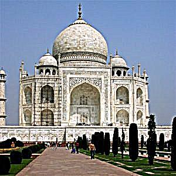
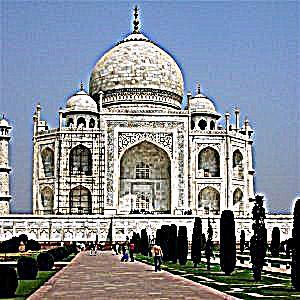
Increasing the alpha results in an increase in the values of high frequency that is added back into the original image. This creates a much sharper image, as the appearance of sharpness in an image comes from the amount of high frequencies. But since it does increase the magnitude of the high frequencies, it also ended up adding a lot of noise especially to the sky.
Below are the results of applying the filter to a blurry image I took at a restaurant. I think that the function helped successfully sharpen the image and make it look less blurry.
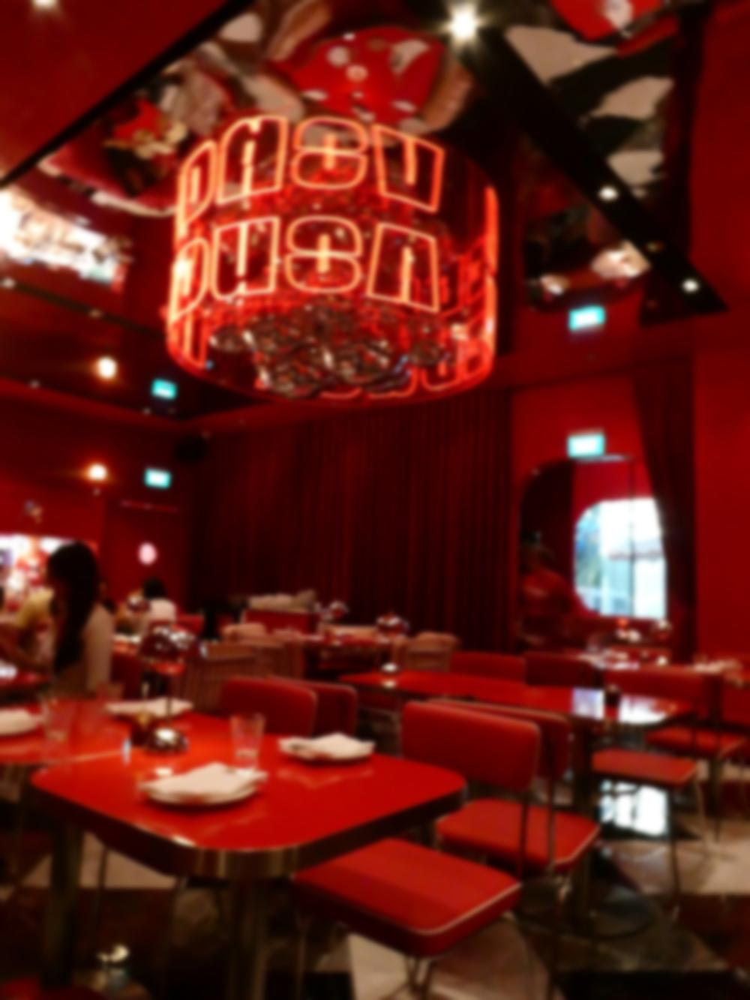
sigma = 2
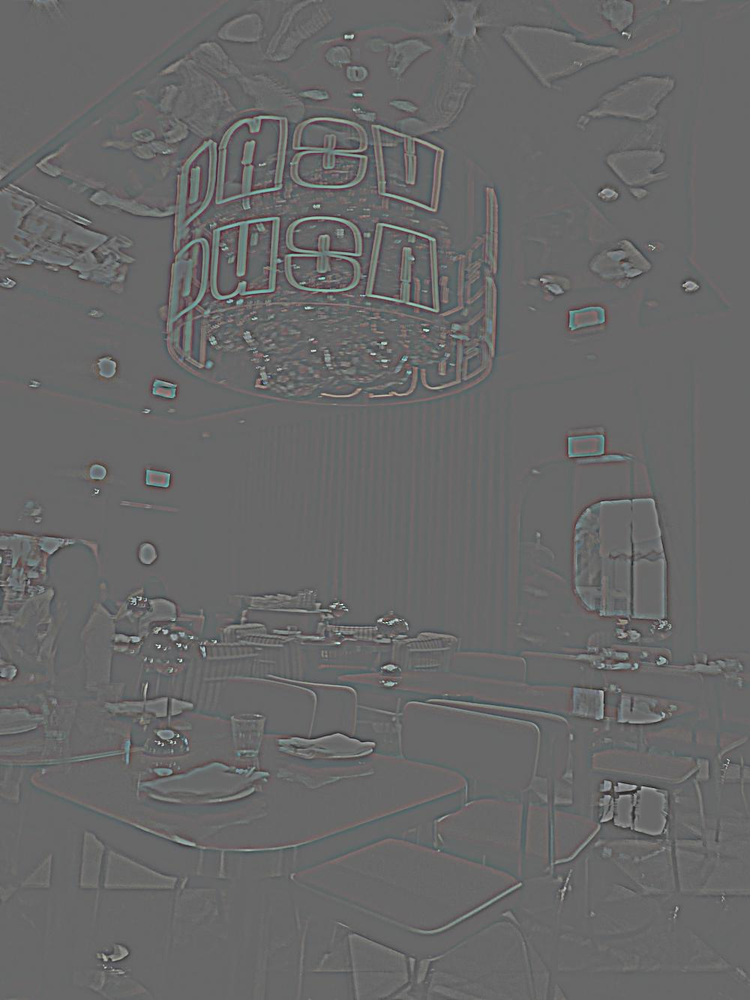
Calculated by taking original (image - blurred image) * alpha, where alpha = 2

Calculated by taking original image + high frequency image
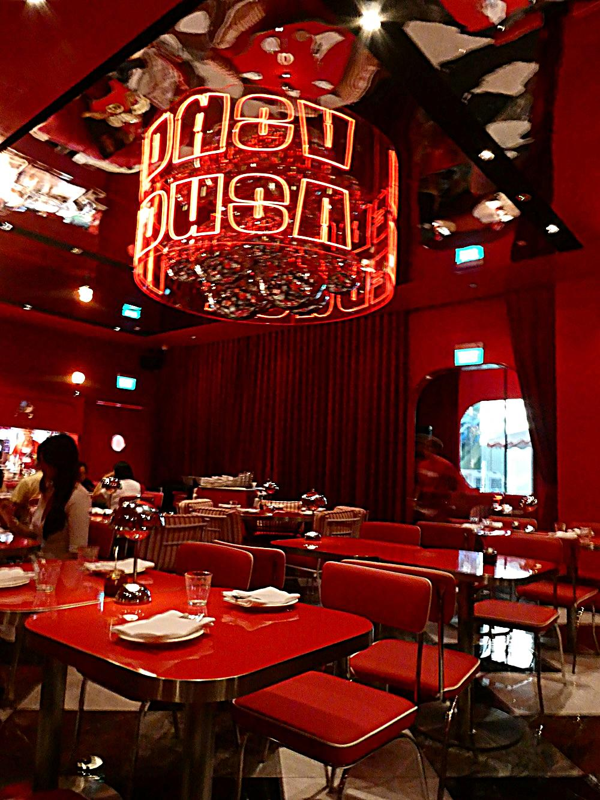
sigma = 2, alpha = 2
I chose an image I took of a panda statue to blur using a gaussian filter then sharpen using the unsharp mask filter convolution:
sigma = 3
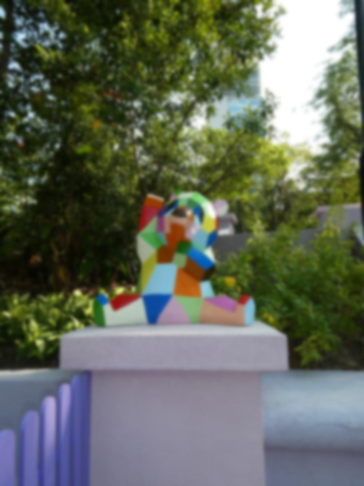
sigma = 3
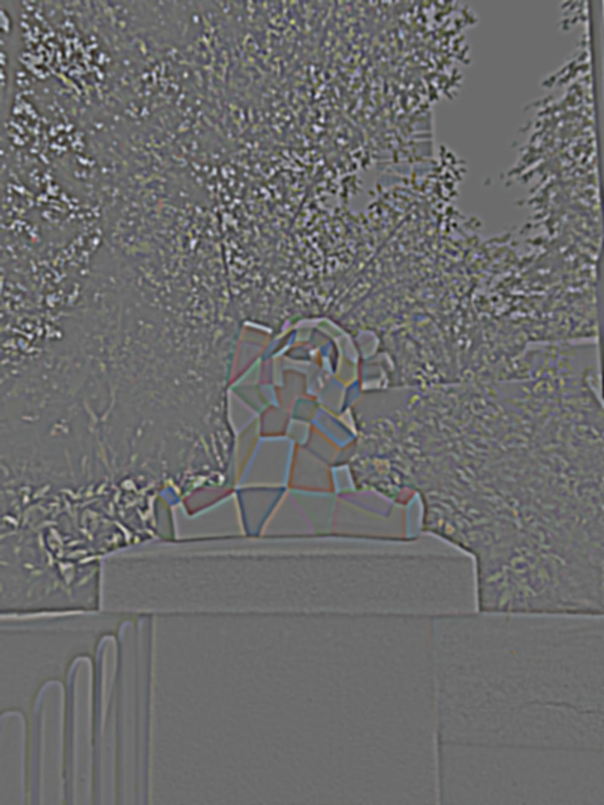
Calculated by taking original (image - blurred image) * alpha, where alpha = 1.1

Calculated by taking original image + high frequency image
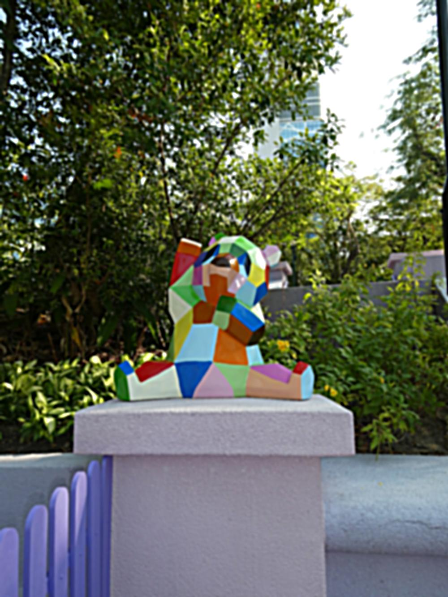
sigma = 3, alpha = 4
Using the same sigme but an alpha of 4, I was able to slightly resharpen the image after I blurred it using a gaussian filter. However, because I used an alpha of 4, I think it also ended up adding a lot of noise to the image, making the sharpened function noisier than my original image.
To create the hybrid images, I needed to combine an image with high frequencies and another with lower frequencies. The higher frequencies have more detail that can be seen up close, and the lower frequency image will be visible from further away as the human eye aliases the high frequencies away. For this task, I stuck to using just the greyscale version of the images.
To align the images, I used the starter code provided. The coordinates I selected on the images to align them are listed in my results section.
For my low frequency filter, I created a gaussian filter and convolved the 'low-pass' images with the gaussian filter. Blurring with a gaussian filter removes the high frequency details, leaving only the lower frequency details. The kernel size of the gaussian filter was 6 * sigma.
For my high frequency filter, I created another gaussian filter separately from the low frequency filter. I decided to do this because when I initially used the same gaussian filter for both passes, I found that the results either left too much high frequencies in the low pass image or too little high frequencies in the high pass image. Therefore, having two separate filters for the low and high frequency filter passes allowed me to adjust each image separately. The kernel size of the gaussian filter was also 6 * sigma.
To get the high frequency image, I convolved the 'high-pass' images with the gaussian filter and then subtracted this result from the original image. Since the gaussian filter only keeps lower frequencies, subtracting the result from the original image will only keep the higher frequencies. For one of the hybrid images I also sometimes used an alpha value > 1 to magnify the high frequencies of the 'high-pass' images to make it more visible.
Here is the gallery of my hybrid images, including the hybrid image of the samples given.
Here is the result for the sample image of Derek and Nutmeg:

Alignment Coordinates: (302, 346) and (440, 333)

Alignment Coordinates: (606, 292) and (751, 373)
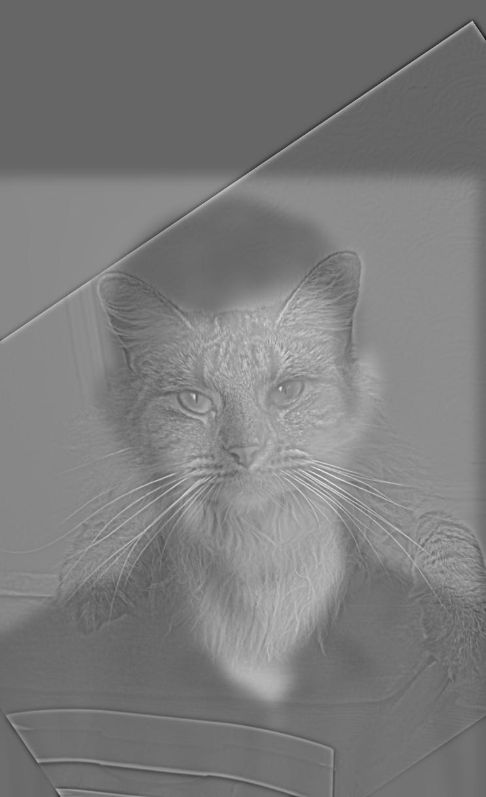
Low-pass gaussian filter sigma = 10
High-pass gaussian filter sigma = 4; alpha = 2
For my first hybrid image, I used a photo of my maltese dog, Summer, and a photo of a family friend's corgi, Red. I selected Summer to be the low frequency image, as in the image Summer's details are smoother and therefore might have less high frequencies to extract. Red's fur has more high frequency details in his fur and contours, which would likely make this a better choice for the high frequency filter, as there are more high frequencies to extract. Below are the results:
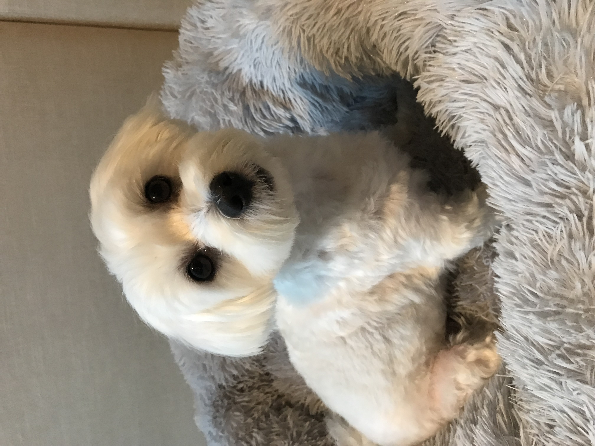
Alignment Coordinates: (1075, 1291) and (1365, 1823)
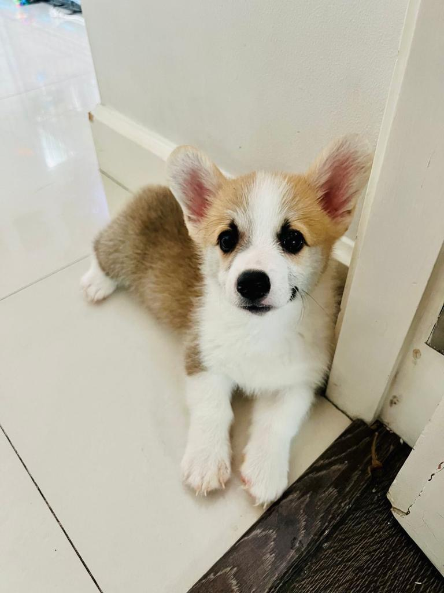
Alignment Coordinates: (393, 422) and (510, 422)
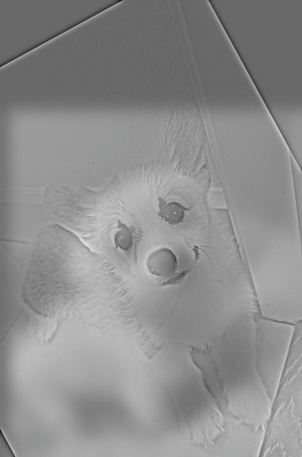
Low-pass gaussian filter sigma = 15
High-pass gaussian filter sigma = 5; alpha = 2
*note: I also had to rotate the image result since for some reason the output put the image sideways.
Below is the fourier visualizations of the hybrid process
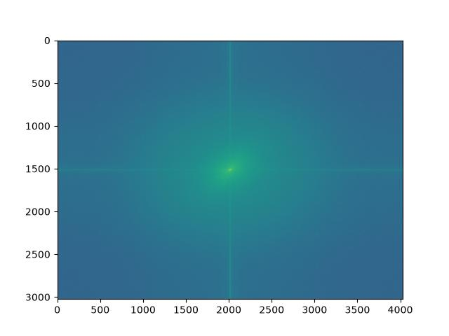
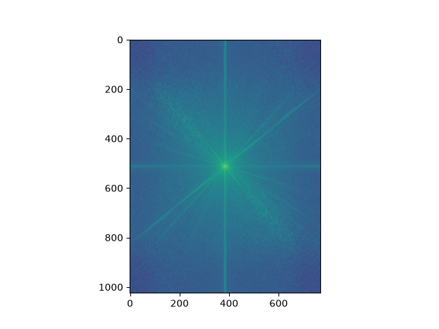
sigma = 2
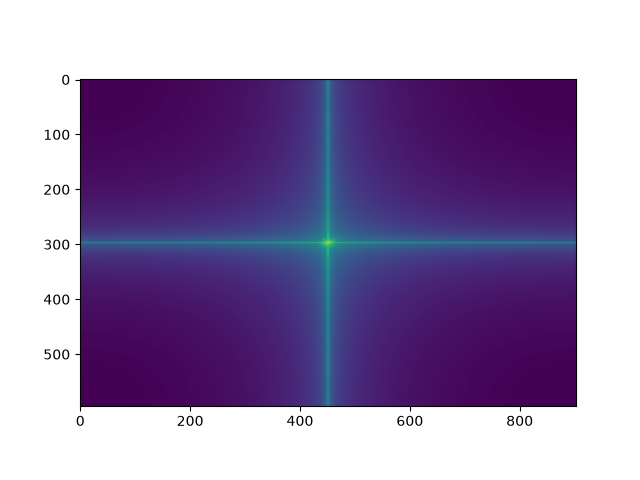
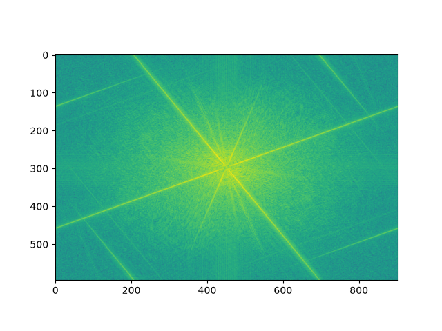
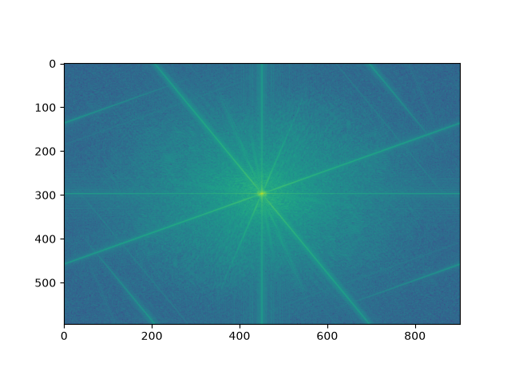
My second hybrid image was inspired by the recently released 'The Odyssey' and 'Spiderman: No Way Home'. Jon Bernthal was in both movies, and his characters had very different hairstyles. Therefore, my hybrid image was of Jon Bernthal as the Punisher and Menelaus. Since both photos seemed to have similar levels of high frequencies, I had to test out which image would be better as the low frequency image. Ultimately, I selected the image of Jon Bernthal as Menelaus to be the low frequency image. When I blur the image of Jon Bernthal as the Punisher, his hair begins to blur into the background. But when I extract the high frequencies, his hair is much more visible.
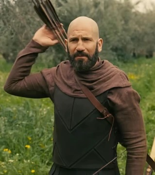
Alignment Coordinates: (1075, 1291) and (1365, 1823)
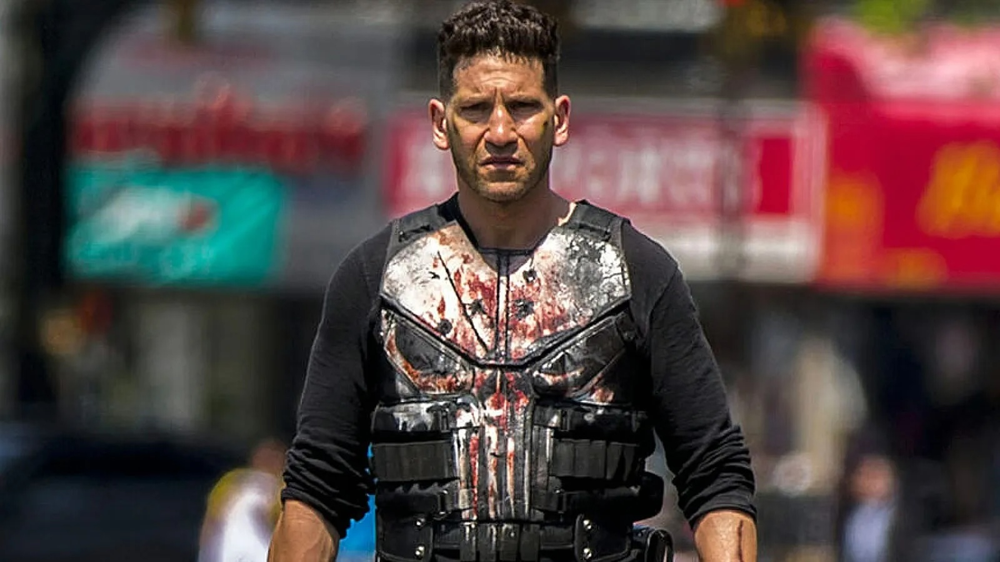
Alignment Coordinates: (393, 422) and (510, 422)
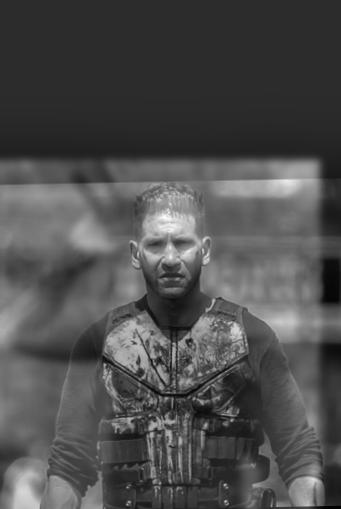
Low-pass gaussian filter sigma = 4
High-pass gaussian filter sigma = 40
The website I found the images in are: Menelaus, Punisher
To blend the images together, I needed to implement gaussian and laplacian stacks. In the paper, they implemented laplacian stacks of levels 0, 2 and 4. To do this, I iteratively convolved the two images with a gaussian filter of sigmas from 0 to 4 to generate blurred images. Then each laplacian stack was created by subtracting the convolved images from each other. Here is the full breakdown of how my code created the laplacian levels:
Afterwards, to create images j-l, my program added the laplacian levels together.
Here is the result of simply implementing the gaussian stacks and masking half the image without any blending:

High frequency
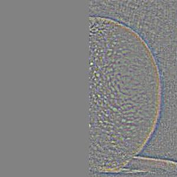
High frequency
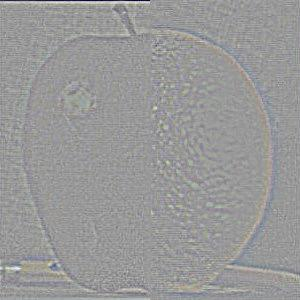
High frequency
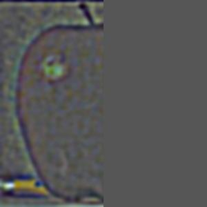
Middle frequency
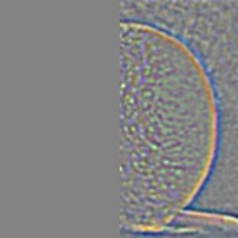
Middle frequency
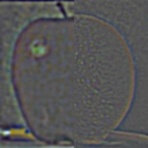
Middle frequency
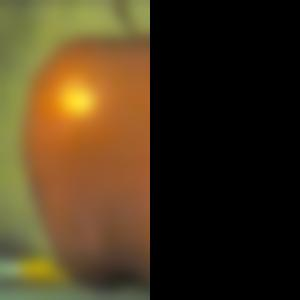
Low frequency
Low frequency
Low frequency
Low, middle and high frequencies
Low, middle and high frequencies
Low, middle and high frequencies
Since the mask did not undergo any blending at each level, there was a seam in the middle of the image.
I blended each image to remove the seam by using a gaussian filter on the mask. At each laplacian level, I convolved the previous level's mask with a gaussian filter. The gaussian filter's sigma was m * (the level number), where m is a variable that can be changed. This was because a sigma of 2 and 4 created too little blurring in the seam, and so I needed to have a larger kernel and sigma in order to create a smoother transition from 0 to 1 in the mask. To do the multi-resolution blending, I combined the two images using the blurred mask using the equation we learnt in lecture: left_image * (1-mask) + right_image * mask
To get the individually masked images like on the right and middle columns of the example, I just multiplied the left image with (1 - mask) and the right image with (mask)
Here are the results of the apple and orange blending. I decided on the m=5 for blurring the apple and orange after testing out values from 2 - 5, since the value 5 created a blur most similar to the original image in the project 2 task page.
High frequency

High frequency

High frequency
Middle frequency
Middle frequency
Middle frequency
Low frequency
Low frequency
Low frequency
Low, middle and high frequencies
Low, middle and high frequencies
Low, middle and high frequencies
For my first blended image, I decided to make a franken-cake of my two favorite cakes: strawberry shortcake and black forest cake. I love strawberry and chocolate, so I wanted to see how it would look to combine the two cakes into a single slice. I used a horizontal seam so that the top half of the cake would be chocolate and the bottom half would be strawberry shortcake. I also decided the image should be masked at y=245 pixels from the bottom so that the seam is in between the two layers to ensure the blend is as smooth as possible. Here are the results.
Source:
Source:
Here are the links to the website where I got the original cake images: Strawberry Shortcake Image, Black Forest Cake Image
My second blended image was of my dog Summer and a cat. I used a vertical seam so the left half of the new animal was my dog, and the right half was the cat. The images were slightly off-center so I also set the image mask so that the "seam" would be at y = 240 pixels. Here are the results.
Source:
Source:
The link to the original cat image is here
I also created a blended image with a non-linear mask. I created a circular mask to blend a leopard's face onto a lion's mane and body. Both these images were taken by me. The circular mask had a radius of 45 pixels, since that roughly captured the leopard's face while also allowing the lion's mouth to blend together with the leopard's mouth. I made sure to crop the image so that the lion and leopard faces were centered so that the center of the circle could be at the center of the square, which was 200 pixels. Below are the results!
Source:
Source:
Unfortunately I struggled to fully blend the top half of the leopard's head into the lion's face which is likely due to the large difference in pattern. Maybe I would need more levels in my laplacian and gaussian stacks to have more blending. However, I noticed that the leopard and lion mouths blended quite well together! So I think that it was successful in the lower portions when there was not a stark difference in the fur patterns.
I think that my franken-cake was the most successful blending out of the 3. I think that this was partly due to 2 things. Firstly, I was able to find pictures that had very similar angles and perspectives, which made the transition between the cakes very smooth in terms of perspective. Secondly, the part where the blending seam was had very similar textures between the two images so the blending worked really well. Unfortunately the patterns and textures were not super similar in my other two images, so it was a little hard to fully blend the patterns together smoothly.
I feel like the most important thing I learnt from this project was a much deeper understanding of how high and low frequencies affect our own perception of an image. Before taking this class and doing this project, I had never given any thought to how frequencies of an image can affect how sharp or blurred it looks. This concept is something that I found so interesting, especially since I enjoy taking photos as a hobby and sometimestake blurry photos.